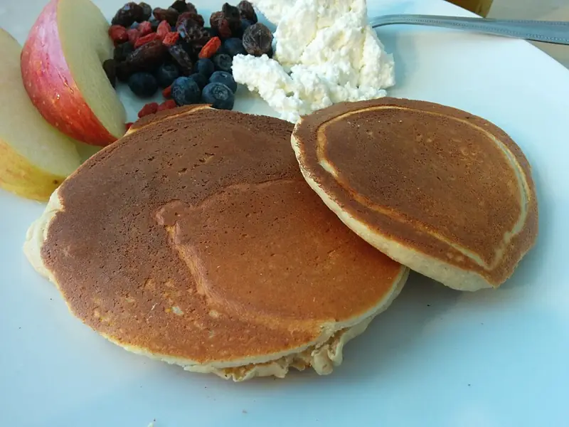

Фото: Syced, CC0

Протеиновые блины на твороге
Тонкие блины из творога, яиц и овсянки без муки
25 мин2 порц.344 ккал на порциюБ 29 · Ж 17 · У 20Интернациональная кухня
Продукты на 2 порц.
- Творог 5%200 г
- Яйцо куриное2 шт
- Молоко100 мл
- Овсяные хлопья5 ст. л.
- Соль1 щеп.
- Растительное масло1 ч. л.
Как готовить
- Сложите в блендер творог, яйца, молоко, овсяные хлопья и соль.
- Взбейте 1-2 минуты до гладкого жидкого теста и дайте постоять 5 минут.
- Разогрейте сковороду на среднем огне и смажьте маслом с помощью кисточки или салфетки.
- Налейте 2-3 ст. л. теста, распределите по сковороде и жарьте 1,5-2 минуты, пока края не подсохнут.
- Переверните лопаткой и жарьте ещё 1 минуту до золотистых пятен.
Совет. Эти блины нежнее обычных, поэтому делайте их небольшими, около 15 см. Если тесто густеет, добавьте 2-3 ст. л. молока.